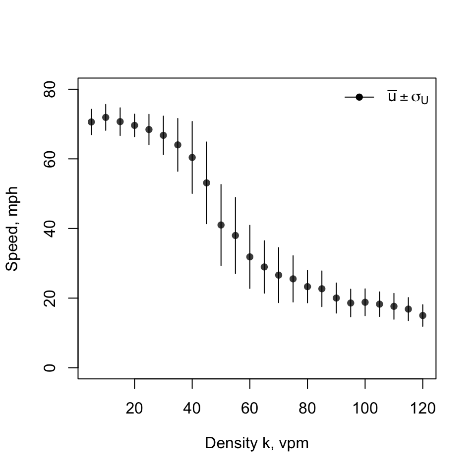

Ring-Road Experiment
A Controlled Experiment
We continue our model building effort by simulating conditions observed on a ring or loop road. The YouTube video shows \(n\) = 22 vehicles (Sugiyama et al. 2008). The drivers cannot pass one another or enter or exit the loop. Each driver was instructed to maintain a same constant speed \(u\). The drivers cannot follow instructions. After a few seconds, the traffic breaks down, i.e., drivers cannot maintain speed \(u.\)
Why? The video shows the vehicles to be traveling at a reasonable speed. Initially, all vehicles are uniformly distributed around the circle. After a few seconds, the vehicles begin to interact because the one or more drivers cannot maintain speed \(u\). If we track a vehicle, we can see the speed will vary by a slight amount. Since their no room to move laterally, the drivers must follow and react to the situation directly in front of them. This behavior is a classically called car-following (Elefteriadou 2014) (Trieber and Kesting 2013).
It is hypothesized that the vehicles described in the preceding paragraph are operating in a congested state. The spacing between vehicles, while it appears to be sufficient, is not. The number of vehicles on the road \(n\) is sufficiently large to cause the vehicles to interact. Look at a pair of vehicles. If a lead vehicle decelerates to a slower speed than its following vehicle must slow down to avoid a crash. The following driver is risk averse. This interaction moves upstream causing other leader-follower vehicle pairs to slow down as well. If there are fewer vehicles, the space between vehicles, the distance headway then an individual driver can decelerate without affecting the vehicle behind it. The vehicles are operating in a free-flow state.
A Brownian Bridge Model of Speed
Can we explain this behavior mathematically? Consider the following approach:
First, assume the speed of a vehicle to be the random variable \(U(t)\) and assume the process is defined by a stationary time-series model of the form:
- \(U(t) = u + \sigma Z\)
where \(u\) is the assigned speed as specified by the experiment and \(\sigma\) is a standard deviation of speed, \(Z \sim N(0,1)\) is a standard normal probability distribution and time \(t\) is measured in seconds.
The next question is how do we assign the model parameters? It is clear that \(u\) is the assigned experiment speed but what is its magnitude? The box plot of speed-density from our exploratory analyses showed a connection of speed and density. The following density-speed plot is a cleaner version of the box plot.1

The traffic density \(k\) is controlled by the number of vehicles on the road \(n\) and ring-road radius \(r\):
- \(k = n/2\pi r\)
Knowing \(k\), select \(u\) and \(\sigma\). Rewrite \(U(t)\) as a function of \(k\):
- \(U(k,t) = u(k) + \sigma(k) * Z\)
Assigning \(u\) and \(\sigma\) are not clear-cut as originally envisioned. In addition to treating speed and speed volatility as functions of density, \(U(k, t)\) is a microscale model where driver reaction takes place on a time-scale of seconds and the density-speed plot is a macroscale model derived from 15-minute average data or \(\tau\) data. The scales are incompatible.
Second, the stationary time-series \(U(k,t)\) model does not adequately explain driver behavior in a rational manner. Define the time-step equal to \(\Delta t = t_i - t_{i-1}\). Given \(Z\) takes on both positive and negative values, a simulation can predict vehicle speeds flip-flopping back and forth from one second to the next. Obviously, a normal driver does not drive sporadically as described by the model. This flaw is rectified by replacing the \(\sigma(k) * Z\) term with a Brownian motion term:
- \(U(k,t) = u(k) + \sigma(k) * \sqrt{\Delta t} * Z\).
Brownian motion or a Wiener process is defined as \(W(\Delta t) = W(\Delta t) - W(0) \sim \sqrt{\Delta t} * Z\) where \(\Delta t\) is a time-step (Iacus 2008). For our application a general formula is needed, \(W(\Delta t) \sim N(0,\sigma^2 \Delta t) \sim \sigma * \sqrt{\Delta t} * N(0,1) \sim \sigma * \sqrt{\Delta t} * Z\) where \(\sigma = \sigma(k)\) to simplify the notation.
The Brownian motion \(U(k,t)\) model eliminates the sporadic flip-flopping described above but it suffers from being a non-stationary time-series (Vandeale 1983). A driver will now more smoothly accelerate or decelerate. The model is still unacceptable over extended time periods. For examples, say \(\tau\) = 15 minutes, speeds can reach extraordinary high or low speeds. Negative speeds indicate vehicles are driving backward, which of course does not represent reality.
This problem is overcome by replacing the Brownian motion \(U(k,t)\) model of driver behavior with a Brownian Bridge model:
- \(U(k,t) = u(k) + \sigma(k) * (W(t) - t/\tau * W(\tau))\).
The following two diagrams compare two randomly chosen simulations for \(k\) = 50 and 100 vpm, respectively. They are labelled “Congested Flow at HCM Capacity” (HCM = Highway Capacity Manual) for \(k = 50\) vpm and “Heavily Congested” simulations for \(k\) = 100 vpm. The values of \(u(k)\) and \(\sigma(k)\) are obtained from the density-speed plot. First, we inspect the two simulations.
After time \(\tau\) = 15 minutes, the Brownian Bridge model forces a driver in a mathematical sense to return to his or her initial speed \(u(k)\), the speed at time \(t\) = 0. Between the start and finish times of \(t\) = 0 and 15 minutes, a driver is free to decelerate and accelerate as he or she wishes. The transitions over time are more-or-less smooth as expected. The effect of volatility is in clear evidence. According to the model, a driver can maintain a speed outside the 95% C.I. (confidence interval) for an extended time period as shown by the “Heavily Congested” simulation. It is emphasized that the Brownian Bridge model is for a single vehicle. Our next step is to consider driver interaction, which have not done as yet.
Car-Following and Highway Safety
We now consider: (1) driver performance in a car-following situation and (2) highway safety. Car-following and safety are strongly associated because drivers are typically risk averse. Drivers avoid crashes.
The Brownian Bridge model described thus far is for a single vehicle. It must be further adapted to simulate: (1) driver performance in a car-following situation and (2) safety. These two features are incorporated into the R cartools algorithms. Car-following and safety are strongly associated because drivers are typically risk averse. Drivers avoid crashes.
Consider a pair of vehicles, one is designated as a leader and the other one designated as a follower. At each time-step in the simulation algorithm, the locations and speeds of the lead and following vehicles and the headway between the two vehicles are calculated. A safe driving distance, a distance headway, is defined by the following function:
- \(h_{safe} = f(u(k), l_{eff})\),
where \(u(k)\) is the vehicle speed at density \(k\) and \(l_{eff}\) is the effective vehicle length. A driver is assumed to keep one vehicle length for each ten mph. At slow speeds, \(h_{safe}\) = two-vehicle lengths or twenty-eight feet headway.
If there is a safe headway violation, the following vehicle locations and speeds are adjusted to eliminate the violation. If the lead vehicle slows, the following vehicle must slowdown to avoid a crash if too close. Under a less dense condition, the drivers can vary their speeds without affecting one another. These features are incorporated in rrtrials function, which we denote as:
- \(U(t) = U(k, u, \sigma, h_{safe}, t)\).
Time-Distance Trajectories
Does rrtrials predict driver behavior that is similar to that shown in the controlled experiment? rrtrials produced the following \(t-x\) trajectories. The vehicles are evenly placed along the \(x\) axis at \(t\) = 0 and the drivers are given the same instructions as the drivers in the Yuki Sugiyama experiment. They are instructed to maintain a constant speed \(u\) and headway \(h\).

As in the full-scale experiment, the simulated drivers cannot maintain a constant speed or even spacing. After a few seconds, the vehicles begin to interact and form clusters (moving queues) and cannot maintain the constant speeds \(u\) is either simulation.
The volatility effects of \(\sigma(k)\) are easily evaluated with visual inspection of the dotted lines shown in the figures above. The dotted straight line is the trajectory of the lead vehicle, assuming that its driver could maintain a constant speed \(u\) with \(\sigma(k)\) = 0. Since \(x = u * t\), the slope of the dotted straight line is \(u\). Most vehicles in the rrtrials simulation tend to lose speed.
Given these results, rrtrials simulator matches the results observed in the controlled experiment. While there are many variables that are needed to define the results, speed volatility \(\sigma\) and the Brownian Bridge \(U(k,t)\) are most important.
References
Elefteriadou, Lily. 2014. An Introduction to Traffic Flow Theory. New York, New York: Springer.
Iacus, Stefano. 2008. Simulation and Inference for Stochastic Differential Equations: With R Examples. Springer-Verlag.
Sugiyama, Yuki, Minoru Fukui, Macoto Kikuchi, Katsuya Hasebe, Akihiro Nakayama, Katsuhiro Nishinari, Shin-ichi Tadaki, and Satoshi Yukawa. 2008. “Traffic Jams Without Bottlenecks—Experimental Evidence for the Physical Mechanism of the Formation of a Jam.” New Journal of Physics 10 (3):033001. http://stacks.iop.org/1367-2630/10/i=3/a=033001.
Trieber, Martin, and Arne Kesting. 2013. Traffic Flow Dynamics: Data, Models and Simulation. Springer.
Vandeale, Walter. 1983. Applied Time Series and Box-Jenkins Models. Academic Press.
The cartools functions uk_sdk, usdBBridge and rrtrials are used to create the plots shown on this page.↩